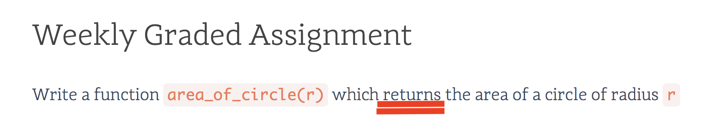

class: center, middle # Unit 1 ## Fundamentals of Programming --- ### General Announcements - Look for the answer before asking - [Discourse](https://help.launchcode.org) - [Canvas](https://learn.launchcode.org) - [Slides](https://aleesham.github.io/2018fall-lc101/) - [Google](https://www.google.com) --- class: center, middle # [Studio Solution](https://runestone.launchcode.org/runestone/static/thinkcspy/Studios/turtle-racing.html) --- class: center, middle # Chapter 5 Lecture --- ### Topics - Functions - The `main` function --- ### Functions - What is a function used for? - How do we get data in or out of a function? - What is the difference? --- ``` #input def fun1(): y = 12 def fun2(): x = 4 + y #output ``` --- ``` #input def fun1(): y = 12 def fun2(): x = 4 + y #output NameError: name 'y' is not defined ``` --- ### Functions - `print` is a function - `return` is a keyword - What is the difference? --- ### Functions: Example - Write a [function](https://runestone.launchcode.org/runestone/static/thinkcspy/toc.html) - named `hello1` that takes a string parameter and prints `"Hello {name}"` - named `hello2` that takes a string parameter and returns `"Hello {name}"` - What is the return type of each function? --- ### The `main` function - Why do we do this? (We will get to this in the large assignments) - Example: we will apply this to the last [examples](https://runestone.launchcode.org/runestone/static/thinkcspy/toc.html)! --- ### Chapter 5 Exercises - [Chapter 5](https://runestone.launchcode.org/runestone/static/thinkcspy/Functions/Exercises.html) - 2 - 10 --- ### Chapter 5 Assignment Clarification - What is `testEqual`? - Let's do an [example](https://runestone.launchcode.org/runestone/static/thinkcspy/Functions/Exercises.html)! <div class="image">  </div> --- class: center, middle # Q&A --- class: center, middle ## Studio Walkthrough ### [Wagon Wheel](https://runestone.launchcode.org/runestone/static/thinkcspy/Studios/wagon-wheel.html)